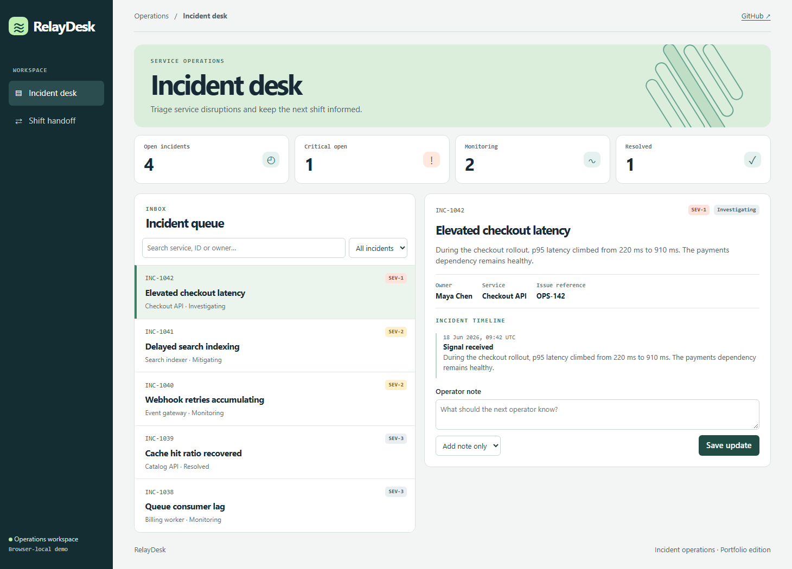

Incident workflow
- APIFastAPIValidate update
- SQLDjango ORMCommit timeline
- OPSHandoffBrief next shift
Incident operations
RelayDesk
An operator desk for triage and shift handoff. Follow an incident, record a decision and give the next engineer a briefing with the latest context.
- Signal
- Triage
- Handoff